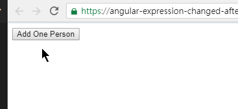
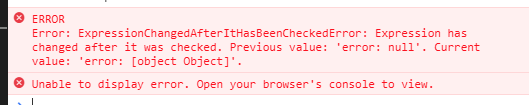

NgModel 如果沒寫好，很容易出現 ExpressionChangedAfterItHasBeenCheckedError 的錯誤訊息，但這一個錯誤訊息可能也不是 NgModel 直接造成的。只好又將 source code 翻出來看了
緣由
有人在 FB 社群上詢問，問什麼以下的程式碼會出現 ExpressionChangedAfterItHasBeenCheckedError 的錯誤訊息
1 | import { Component, ViewChild } from '@angular/core'; |

當點下 Add One Person 後，就會出現以下的錯誤訊息，但到底為什麼呢?

這個錯誤訊息的產生是因為 [ngClass] 造成的，先說解法。
- 使用 Reactive Form 寫
- 使用
[class.error]代替[ngClass]="{'error': age.errors }" - 自訂
ng-invalid的 class 樣式
追追追
這一切都要從 Angular 是如何將 Component / Directive 產生出來說起，所有的 Component 和 Directive 的 constructor 都是在 ApplicationRef.tick() 事件前，所以我們就得來看 NgModule 這一個 Directive 到底做了哪些事情
1 | Directive({ |
- 任何
NgModel都會建立一個FormControl，這個時間點尚未進行任何FormControl的驗證與更新
在第一次的 tick() 發生時，會做以下的事情
1 | tick(): void { |
-
line 9:
detectChanges會執行checkAndUpdateView方法-
checkAndUpdateView內的execComponentViewsAction會觸發OnChanges事件 -
但
Services.updateDirectives卻是在execComponentViewsAction之前，所以[ngClass]這時候接受到的值是null -
NgModelOnChanges事件1
2
3
4
5
6
7
8
9
10
11
12gOnChanges(changes: SimpleChanges) {
this._checkForErrors();
if (!this._registered) this._setUpControl();
if ('isDisabled' in changes) {
this._updateDisabled(changes);
}
if (isPropertyUpdated(changes, this.viewModel)) {
this._updateValue(this.model);
this.viewModel = this.model;
}
}- line 3: 判斷是否為第一次執行，如果是，又會判斷是否是
standalone。如果是standalong或是沒有上層的ngForm的話，則會立刻執行formControl.updateValueAndValidity({emitEvent: false})， 取得controls.errors - 如果不是前一種情形，則會將此
NgModel加入到ngForm.controls裡
- line 3: 判斷是否為第一次執行，如果是，又會判斷是否是
-
-
line10: 是當處在
devMode時，_enforceNoNewChanges的值會是true(主要錯誤發生點是在這一階段發生的)- 執行
checkNoChangesView方法 - 執行到
updateDirectives然後噴錯，因為[ngClass]這時候已經能正常地取得 controls.error 的值 - 因為上面的值在一次
tick週期內被異動了，所以就噴出ExpressionChangedAfterItHasBeenCheckedError錯誤訊息了
- 執行
重新整理一次流程
-
Component Constructor -
NgModel Constructor -
ApplicationRef.tick() -
view.detectChanges() -
checkAndUpdateView1
2
3
4
5
6
7
8
9
10
11
12
13
14
15
16
17
18
19
20
21
22
23
24
25
26
27
28
29
30
31
32
33
34export function checkAndUpdateView(view: ViewData) {
if (view.state & ViewState.BeforeFirstCheck) {
view.state &= ~ViewState.BeforeFirstCheck;
view.state |= ViewState.FirstCheck;
} else {
view.state &= ~ViewState.FirstCheck;
}
shiftInitState(view, ViewState.InitState_BeforeInit, ViewState.InitState_CallingOnInit);
markProjectedViewsForCheck(view);
Services.updateDirectives(view, CheckType.CheckAndUpdate);
execEmbeddedViewsAction(view, ViewAction.CheckAndUpdate);
execQueriesAction(
view, NodeFlags.TypeContentQuery, NodeFlags.DynamicQuery, CheckType.CheckAndUpdate);
let callInit = shiftInitState(
view, ViewState.InitState_CallingOnInit, ViewState.InitState_CallingAfterContentInit);
callLifecycleHooksChildrenFirst(
view, NodeFlags.AfterContentChecked | (callInit ? NodeFlags.AfterContentInit : 0));
Services.updateRenderer(view, CheckType.CheckAndUpdate);
execComponentViewsAction(view, ViewAction.CheckAndUpdate);
execQueriesAction(
view, NodeFlags.TypeViewQuery, NodeFlags.DynamicQuery, CheckType.CheckAndUpdate);
callInit = shiftInitState(
view, ViewState.InitState_CallingAfterContentInit, ViewState.InitState_CallingAfterViewInit);
callLifecycleHooksChildrenFirst(
view, NodeFlags.AfterViewChecked | (callInit ? NodeFlags.AfterViewInit : 0));
if (view.def.flags & ViewFlags.OnPush) {
view.state &= ~ViewState.ChecksEnabled;
}
view.state &= ~(ViewState.CheckProjectedViews | ViewState.CheckProjectedView);
shiftInitState(view, ViewState.InitState_CallingAfterViewInit, ViewState.InitState_AfterInit);
}- line 21: 觸發
NgModel.ngOnChanges事件
- line 21: 觸發
-
開發模式下:
view.checkNoChanges() -
service.checkNoChangesView()1
2
3
4
5
6
7
8export function checkNoChangesView(view: ViewData) {
markProjectedViewsForCheck(view);
Services.updateDirectives(view, CheckType.CheckNoChanges);
execEmbeddedViewsAction(view, ViewAction.CheckNoChanges);
Services.updateRenderer(view, CheckType.CheckNoChanges);
execComponentViewsAction(view, ViewAction.CheckNoChanges);
view.state &= ~(ViewState.CheckProjectedViews | ViewState.CheckProjectedView);
}
上述就是一個 tick() 會做的事情，只要在一個 tick 循環內出現 ViewModel 不一致的情形，都會噴錯